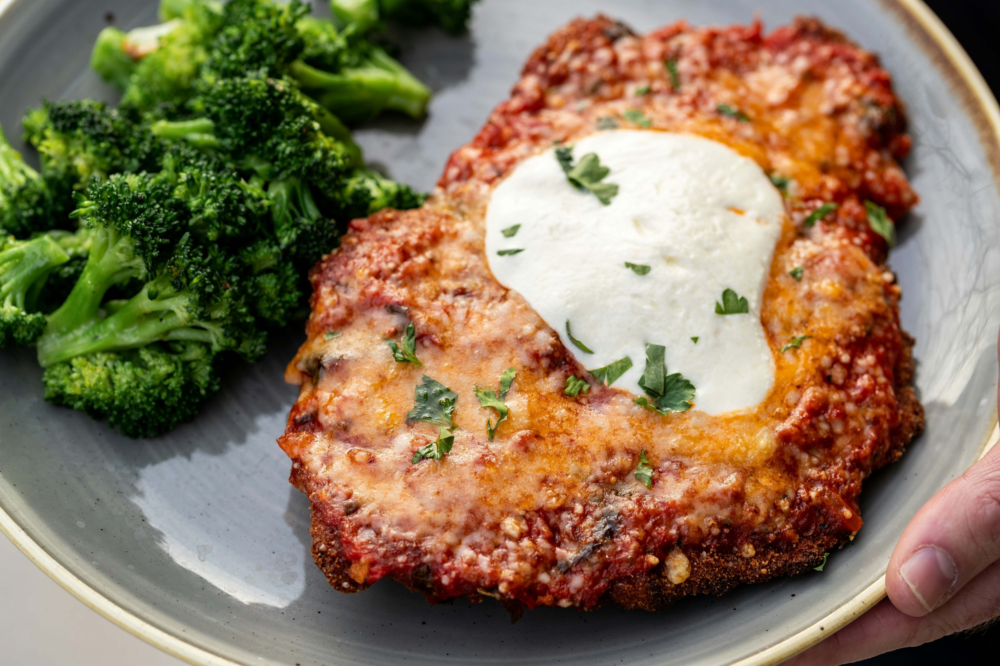

Chicken parmesan is one of those dishes that I almost always consider ordering at an Italian restaurant, despite the fact that it's relatively easy to make at home. There's something particularly satisfying about the combination of crispy breaded chicken, tomato sauce, and an arguably excessive amount of melted cheese. It's not a terribly sophisticated dish, but I don't think it needs to be. Sometimes you just want a good piece of chicken covered in cheese.
The most important part of making chicken parmesan, in my opinion, is maintaining some semblance of crispiness after adding the sauce and cheese. Otherwise, you've gone through the trouble of breading and frying chicken just to make it soggy again. I recommend using a relatively conservative amount of marinara on the chicken itself and serving additional sauce alongside it. Pair it with some spaghetti, garlic bread, or a salad if you're feeling particularly obligated to acknowledge the existence of vegetables.